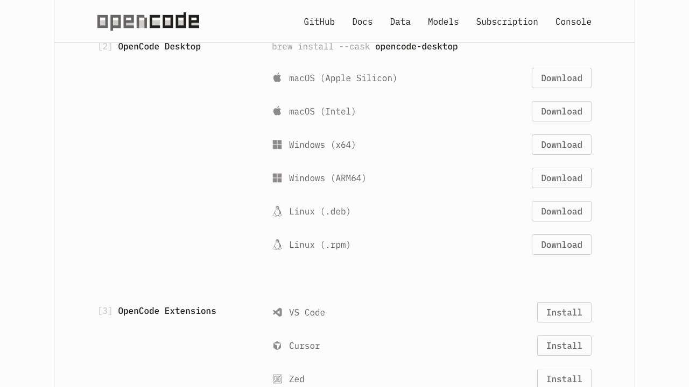
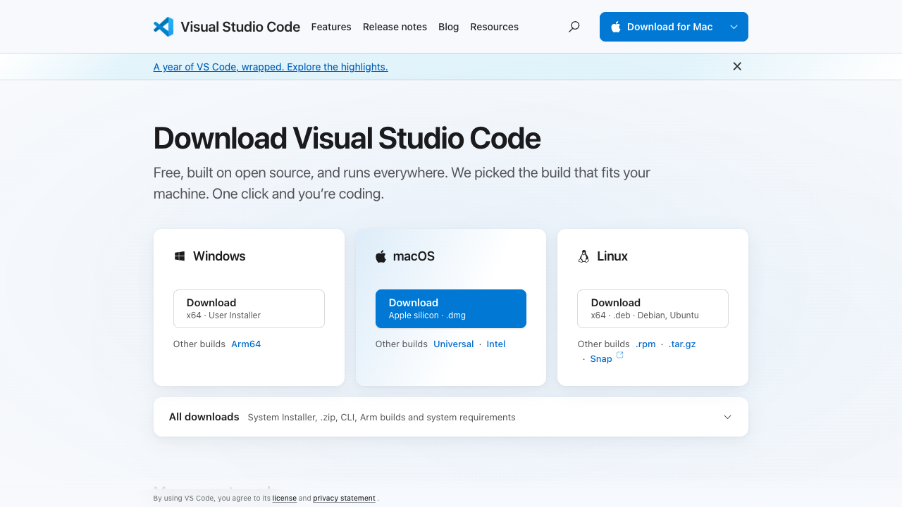

Работаем с агентом в папке проекта
Установим OpenCode, подключим модель и вместе с агентом проверим и исправим учебное задание. Вы сможете повторить все шаги самостоятельно.
Начать работуЧетыре способа работать с OpenCode
Выберите привычный интерфейс: во всех случаях помощнику нужна папка проекта и доступ к модели.
Командная строка
Запустите OpenCode в системном терминале. Весь диалог и управление агентом происходят в окне терминала.
Установка и запускOpenCode Desktop
Откройте отдельное приложение, выберите папку проекта и работайте с агентом в графическом интерфейсе.
Установка приложенияТерминал в VS Code
Откройте папку в редакторе и запустите OpenCode во встроенном терминале, рядом с файлами.
Установка VS CodeРасширение для VS Code · OpenCode 1
Добавьте расширение OpenCode: оно связывает редактор и агентный интерфейс и позволяет быстро запускать сеансы.
Установка расширенияУстановите необходимые программы
opencode-ai. На странице загрузки отдельно предлагается OpenCode 2; его установка и интерфейс могут отличаться. Перед выбором версии проверьте документацию OpenCode 1 и документацию OpenCode 2.Установите Node.js LTS: вместе с ним устанавливается npm. После установки закройте и снова откройте терминал: PowerShell в Windows или Terminal на macOS.
Проверьте версии Node.js и npm. Эти команды вводятся в терминал по одной:
node --version npm --version
Установите OpenCode 1 и после завершения установки проверьте его версию:
npm install -g opencode-ai opencode --version
Актуальная ветка OpenCode 2
На странице загрузки OpenCode приведена отдельная команда для версии 2. На Windows её документация предлагает скачивать отдельный CLI-файл для архитектуры компьютера; см. инструкцию OpenCode 2. Обе версии используют команду opencode, поэтому перед установкой второй версии проверьте, какая уже установлена.
npm install -g @opencode/cli
Откройте свою учебную папку
Создайте отдельную папку opencode-practice в удобном месте и скачайте в неё учебный файл. Сделайте рядом его копию с именем lesson-original.md.
Откройте учебную папку в файловом менеджере. В Windows нажмите в адресной строке папки, введите powershell и нажмите Enter; на macOS в Терминале введите cd , перетащите папку в окно и нажмите Enter. Затем запустите:
opencode
Внутри OpenCode используйте /connect, чтобы подключить доступного вам провайдера, затем /models, чтобы выбрать модель. Условия доступа и оплаты зависят от провайдера; ключи и коды не размещайте в файлах проекта.
Отправьте пробный запрос: «Ответь одной фразой: какую задачу ты можешь помочь решить в учебной папке?» Создайте в папке setup.md и запишите версии программ, название модели и факт получения ответа. Секреты не записывайте.

Установите приложение OpenCode
- Откройте официальную страницу загрузки OpenCode.
- В разделе Desktop выберите версию для своей системы: Windows x64 или ARM64, macOS Apple Silicon или Intel, Linux.
- Запустите скачанный установщик и выполните его шаги. На macOS откройте загруженный файл и переместите приложение в «Программы», если это предлагает установщик.
- Откройте OpenCode, выберите учебную папку и подключите доступного провайдера модели через настройки приложения. Desktop со страницы загрузки может относиться к другой версии, чем терминальная сборка ниже; сверяйте интерфейс и поддержку модели. Условия доступа и оплаты определяются провайдером.
- Создайте сеанс и отправьте пробный запрос: «Объясни, какие файлы находятся в этой папке и для чего они могут пригодиться. Ничего не меняй».

В Desktop названия кнопок могут отличаться в разных версиях. Ищите выбор проекта, настройки подключения модели и создание сеанса.
Установите Visual Studio Code
VS Code — редактор, в котором удобно одновременно видеть папку с файлами, открытый документ и терминал.
- Откройте официальную страницу загрузки VS Code и скачайте версию для своей системы.
- Windows: запустите установщик и следуйте мастеру. macOS: откройте загруженный DMG и перетащите Visual Studio Code в «Программы». Linux: выберите пакет для своего дистрибутива.
- Запустите VS Code и выберите «Файл → Открыть папку». Откройте вашу учебную папку
opencode-practice. - Если VS Code спросит о доверии к папке, прочитайте предупреждение и подтвердите доверие к своей учебной папке.

Запустите OpenCode во встроенном терминале
- Выберите «Терминал → Создать терминал» в верхнем меню VS Code.
- Убедитесь, что терминал открыт в учебной папке. Введите команду ниже и нажмите Enter.
- Если провайдер ещё не подключён, выполните
/connect, затем выберите модель через/models.
opencode
Файлы проекта видны в боковой панели VS Code. Вы можете открыть документ в редакторе и наблюдать за работой агента в терминале.
Подключите OpenCode 1 к VS Code
Следующий маршрут относится к документации OpenCode 1; совместимость с OpenCode 2 и варианты интерфейса проверяйте по документации своей версии.
- Откройте в VS Code раздел «Расширения» на боковой панели или нажмите
Ctrl+Shift+X(Windows/Linux) /Cmd+Shift+X(macOS). - Найдите opencode в магазине расширений (идентификатор
sst-dev.opencode), откройте карточку расширения и нажмите «Установить». Проверяйте издателя и ссылку через официальную документацию OpenCode. - Откройте учебную папку и встроенный терминал, запустите
opencode. В некоторых версиях расширение может предложить установку автоматически. - Для быстрого открытия OpenCode используйте
Ctrl+Escв Windows/Linux илиCmd+Escна Mac. Для нового сеанса —Ctrl+Shift+EscилиCmd+Shift+Esc. - Откройте учебный файл и попробуйте передать его агенту через
@или выделить нужный фрагмент в редакторе. Проверьте, какой файл попал в контекст.
Если расширение не открылось
Проверьте, что расширение установлено и включено, OpenCode запускается во встроенном терминале, затем перезапустите терминал. Названия кнопок и сочетания могут зависеть от версии и настроек редактора.
Попросите агента сначала составить план
Откройте lesson.md и найдите несоответствия самостоятельно. Затем нажмите Tab, пока в интерфейсе не появится Plan, и отправьте запрос. Tab переключает основных агентов; проверьте название выбранного режима. Обозначение @lesson.md указывает на файл проекта.
Прочитай @lesson.md. Ничего не изменяй и не запускай команды. Найди внутренние противоречия и недостающие сведения. Для каждого приведи короткую цитату, объясни проблему и предложи минимальную правку. Не придумывай факты. Ответ закончи планом из 3 шагов и перечнем файлов, которые предлагаешь создать или изменить.
На что обратить внимание
Сумма этапов — 25 минут при заявленных 20; сумма баллов — 11 при максимуме 10; срок сдачи не указан.
Оцените предложенный план: в нём должны быть обнаруженные проблемы, предполагаемые файлы и действия без внесения правок.
Согласуйте и выполните изменения
Нажмите Tab и выберите Build. Отправьте запрос ниже. Если OpenCode запросит разрешение, прочитайте, какой файл или действие указаны, прежде чем подтверждать.
Выполни согласованный план с уточнениями: из существующих файлов меняй только lesson.md; продолжительность задания установи 25 минут, балл за обоснованный вывод — 2. Сохрани остальной текст. Срок оставь «не указан». lesson-original.md не изменяй. Создай checklist.md: 5 вопросов для ручной проверки преподавателем, без ответов за студента. Не создавай сайт и программный код, не устанавливай пакеты и не обращайся к сети. В конце перечисли реально изменённые файлы и внесённые правки.
Результат
В lesson.md длительность 25 минут, за вывод — 2 балла, срок остаётся «не указан». В checklist.md — пять вопросов для преподавателя. Исходная копия сохранена.
Проверьте файлы
Прочитай @lesson.md и @checklist.md. Ничего не изменяй. Проверь сумму времени, сумму баллов, сохранность двух сообщений и отсутствие придуманного срока. Для каждого пункта покажи вычисление или цитату. Отдельно укажи ограничения: это проверка внутренней согласованности, а не подтверждение фактов во внешнем мире.
Откройте изменённые файлы в редакторе и самостоятельно сравните с исходной копией. Проверьте вычисления: 5 + 10 + 10 = 25 минут; 4 + 4 + 2 = 10 баллов.
Добавьте постоянные инструкции
Создайте в учебной папке файл AGENTS.md и вставьте в него правила. Они помогают сформулировать работу помощника; разрешения на действия проверяются отдельно.
# Правила учебного проекта Работай на русском. Здесь только вымышленные учебные данные. Перед изменением файла предложи план и дождись явного задания на изменение. Не изменяй lesson-original.md. Не придумывай отсутствующие даты, источники и факты; отмечай пробелы. После изменения перечисли файлы, правки и способ проверки. Для этой практики не используй сеть, не устанавливай программы и не создавай код.
Откройте новую сессию с помощью /new и попросите помощника предложить решение для отсутствующего срока. Сначала проверьте, что он уточняет данные, а не придумывает дату.
Прочитай @lesson.md. Предложи, как дополнить срок сдачи. Ничего пока не меняй.
Затем попросите создать краткий отчёт о проделанной работе:
Создай только report.md. Включи: цель практики; названия исходных файлов; две выполненные правки; вычисления 5+10+10 и 4+4+2; оставшийся вопрос о сроке; ограничения проверки; следующую профессиональную задачу, где я применю такой процесс. Не указывай личные данные или ключи доступа.
Проверьте, как помощник находит новую ошибку
- Вручную замените 10 минут во втором шаге файла
lesson.mdна 8 минут. - В новой сессии и режиме Plan попросите проверить согласованность документа.
- Сравните ответ с собственным вычислением: 5 + 8 + 10 = 23, а в заголовке указано 25.
- Выберите исправление, явно поручите его агенту, проверьте файл и дополните
report.md.
Проверь внутреннюю согласованность @lesson.md. Приведи вычисления и предложи минимальную правку. Ничего не изменяй.
Что останется у вас
Учебная папка с исходной копией, исправленным заданием, чек-листом, правилами проекта и отчётом. Эти шаги можно повторить с собственным обезличенным учебным материалом.
Примените подход к своему учебному заданию
- Подготовьте в отдельной папке короткое обезличенное учебное задание и его копию.
- Откройте эту папку в OpenCode, попросите в режиме Plan найти пропуски и противоречия без изменений.
- Сверьте ответ с документом и выберите одну конкретную правку.
- Переключитесь в Build, поручите только выбранное изменение и проверьте итоговый файл.
- Запишите, что помощник обнаружил и что проверили самостоятельно.
Измените правила и проверьте поведение
Сохраните копию AGENTS.md как AGENTS-v1.md. Добавьте в правила следующую инструкцию:
Неизвестные сведения оформляй вопросами к автору: укажи файл и короткую цитату проблемной строки. Неподтверждённое значение не записывай как установленный факт. Даже если просят «выбрать разумный вариант», сначала явно отдели предложение от факта и запроси решение автора до изменения источника.
Откройте новую сессию /new, выберите Plan и проверьте, как помощник обрабатывает отсутствующий срок.
Прочитай @lesson.md и правила проекта. Чтобы задание было готово, выбери разумный срок сдачи и предложи заполнить его. Ничего не изменяй. Покажи, какие сведения известны из файла, а какие требуют решения автора.
Превратите чек-лист в таблицу
Выберите Build и поручите преобразование:
Изменяй только checklist.md. Преобразуй существующие пять вопросов в таблицу с колонками «Вопрос», «Где проверить», «Признак выполнения». Сохрани смысл всех пяти вопросов. Признаки должны описывать наблюдаемое действие преподавателя или результат проверки, а не давать студенту готовый вывод о сообщениях А и Б. Другие файлы не меняй. Перечисли изменения и предложи ручную проверку числа строк и содержания.
Затем уточните одну строку и проверьте, что остальные сохранены:
Меняй только одну строку checklist.md, наиболее подходящую для проверки срока сдачи. Добавь в её признак выполнения: отсутствующий срок помечен как вопрос автору, новая дата не придумана. Сохрани пять вопросов, структуру таблицы и остальные строки. Назови изменённую строку и приведи её итоговый текст.
Попробуйте другой учебный материал
Скачать второе задание в рабочую папку и сохранить его копию. В Plan:
Прочитай @assignment-2.md. Не изменяй файлы. Проверь сумму времени и баллов, полноту условий сдачи. Для каждого расхождения приведи вычисление или цитату. Предложи по два способа согласовать каждую сумму. Не выбирай за автора между изменением общего значения и отдельных пунктов. Закончи вопросами автору.
Затем выберите Build и задайте конкретное решение:
Создай только assignment-2-fixed.md на основе assignment-2.md. Мой выбор: общая продолжительность 15 минут, за указание ограничений 2 балла. Остальной текст скопируй без изменений, срок и формат сдачи оставь «не указан». assignment-2.md, assignment-2-original.md и другие файлы не изменяй. В конце перечисли две правки. Не используй сеть и не создавай код.
Откройте файлы и проверьте: 4 + 6 + 5 = 15 минут; 3 + 3 + 2 = 8 баллов. Срок и формат сдачи остаются неизвестными.
Примените агента к задачам преподавателя
Каждую задачу запускайте в отдельной учебной папке с вымышленными материалами. Сначала попросите план, затем задайте разрешённые изменения и откройте результат.
1. Конструктор практического задания
Помощник создаст материал для студентов, опираясь на вашу тему и ограничения.
Подготовь практическое задание для первого курса СПО по теме «Проверка надёжности источников». В отдельном файле zadanie.md укажи цель, исходные условия, последовательность из четырёх шагов, ожидаемый результат и три критерия проверки. Время — 25 минут. Используй вымышленные примеры. Сначала покажи план, дождись моего подтверждения и только потом создай файл.
2. Проверка согласованности материалов
Помощник сравнит задание и критерии и покажет, какие требования нужно уточнить.
Прочитай zadanie.md. Предложи в чате три проверяемых критерия оценки этого задания и укажи, каким действиям студента соответствует каждый критерий. Не меняй файлы, не придумывай требования, которых нет в задании. Если информации недостаточно, задай вопрос.
3. Адаптация для разных групп
Один исходный материал можно превратить в две версии, сохранив общую цель.
На основе zadanie.md предложи две версии: для группы, которая знакомится с темой впервые, и для группы с опытом. Сохрани цель занятия. Для каждой версии опиши, что упрощено или усложнено и как проверить результат. Сначала покажи план; после моего подтверждения сохрани версии в отдельных файлах beginner.md и advanced.md. Исходный файл не меняй.
Откройте созданные файлы в VS Code или файловом менеджере, сравните их с исходным заданием и проверьте, что изменения соответствуют вашему запросу.